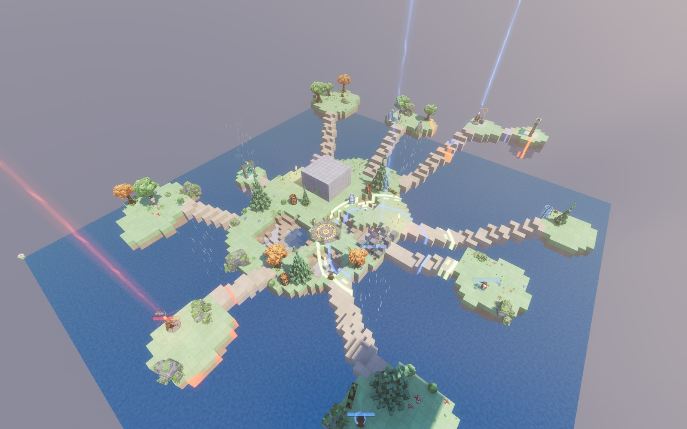
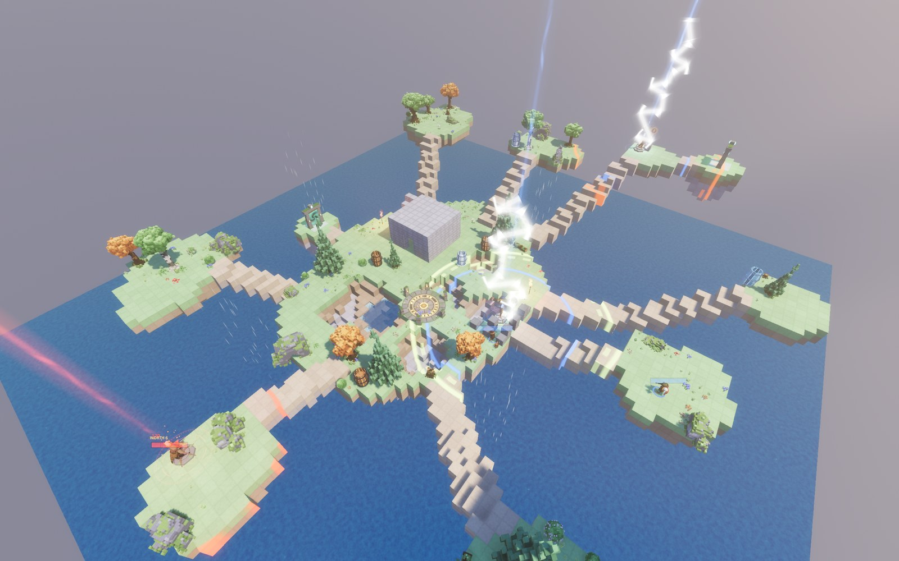
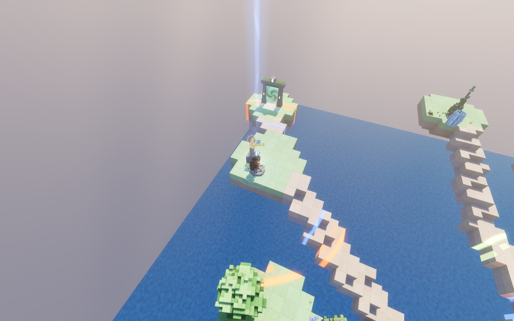

Every shot changes
the ground it lands on.
Turn-based artillery on fully destructible voxel terrain. Eight animal knights, two sides, four each. Blow the hills away, build them back, and hold the beacons that decide the match.

The match
Beacon War is the whole game. Every ten rounds a knight may plant a territory beacon at their feet, and its disc scores for your side for as long as it stands. First side to 100 points wins.
- 4 v 4eight knights
- 100points to win
- 10rounds per beacon
- 1you, or seven friends
It punishes a lead
Every five rounds, if one side leads by more than five points, lightning strikes that side's masts for 20 each. It never fells a fresh one alone — the warning round is for repairing, or accepting.
Ground breaks in two bites
Blocks carry 80 hit points and the strongest weapon in the game does 65, so the first blast only cracks. The next shot into the same crater takes it. Two shots is the floor, on purpose.
Build it back
Hold the build button and drag across a face: a floor gives a platform, a wall gives a wall. A hillside you flattened last round is a firing step this one.

Four crews
Every crew is a different answer to the same problem, and every one of them has a gap.
Siege
BRUIN the Bear
140 HP on an 80 AP turn. Rocket and mortar, full damage to beacons, and a skydive that lands like a meteor. Too heavy to fly.
Engineer
CRIMSON the Beaver
Beacons for 25 AP and 10 m wide, repairs them, blinks home, and builds at a quarter of everyone else's price. A repair bot does the walking for her.
Scout
BOGUE the Frog
Light and quick. Cloak, jetpack and glider; rifle, shotgun and the net launcher; a drone that lifts the fog for the whole team.
Guardian
HEDGEBRO the Hedgehog
90 HP, sniper and grenades, and a dome for an ally or a beacon. Flies and glides. Steps in front when a rocket is already on its way.

Build, don't only shoot
Points also buy Autometa, and Autometa buys robots. A guard draws power only from inside its mast's disc, and a dead one can be rebuilt on the pad it left standing.
COMBAT
Fires on its owner's turn. A guaranteed hit — no wind, no aim window.
WATCHER
Marks enemies and strips cloaks. Its marks are what most other traits read.
BULWARK
Cuts incoming damage for allies standing in its ring.
PHALANX
Shares the wounds of everyone inside its aura.
Also in the box
- A painted six-page comic, Beacon Knights, that tells where all of this came from.
- A training hall of four rooms, where an owl who has lost before walks you through the bars, the movement and the swing.
- A saved-position walkthrough that explains the board one bubble at a time.
- English and Chinese, switchable at any time.